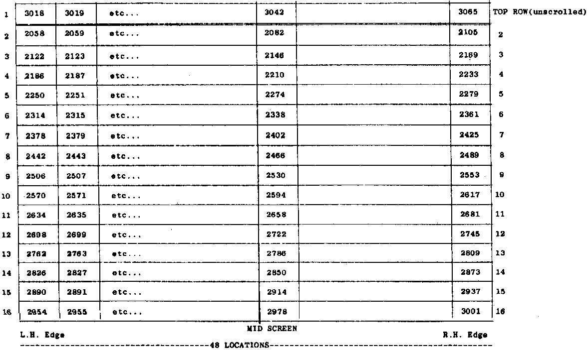

INMC News |
April/May 1980 · Issue 7 |
| Page 27 of 39 |
|---|
gentle reader, is as follows: one can learn about Z80 code in one week to write an entertaining and non-trifling program, and that makes the Z80 a good thing by anybody’s standards.
Chris Webster
(c) Fiffloso 1979.
This article originally appeared in the September 1979 issue of Databus, the Cambridge University Processor Group magazine, and has been reproduced here by kind permission of the author, Chris Webster, and the Databus Editor, Philip Gladstone.
1. The chart below has the decimal equivalents of the Hex addresses of the screens for Nascom 1 & 2. When using Basic, one has to POKE data into the decimalised addresses on the screen, so this chart will help all you Basic people to get your little men into the right positions easily.
(Ed.’s Note: Any position on the screen can be calculated by the Basic using the equation P=1993 + X + 64 x Y, where X is the column (1-48), Y the line (1-16), and P the decimal address of the desired location.)
2. On page 10 is a listing of the Nascom Graphics ROM. If a lot of key-bashers have been scratching their heads trying to get their little men to appear, then this ammended chart is sure to relieve their dandruff, as the chart printed in the original Nascom 2 handbook was far from useful!
| Page 27 of 39 |
|---|